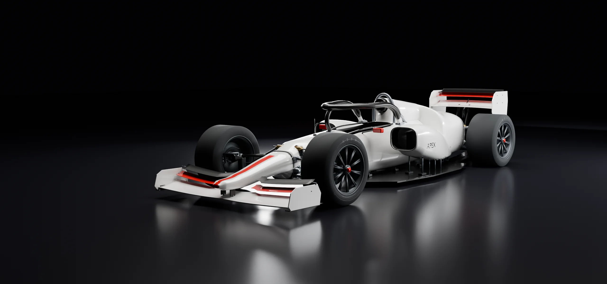
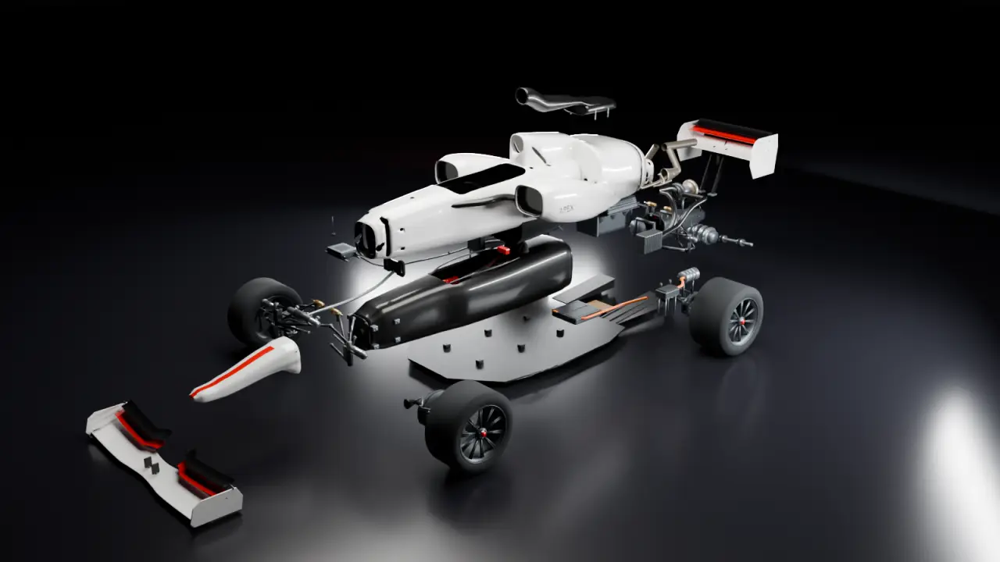
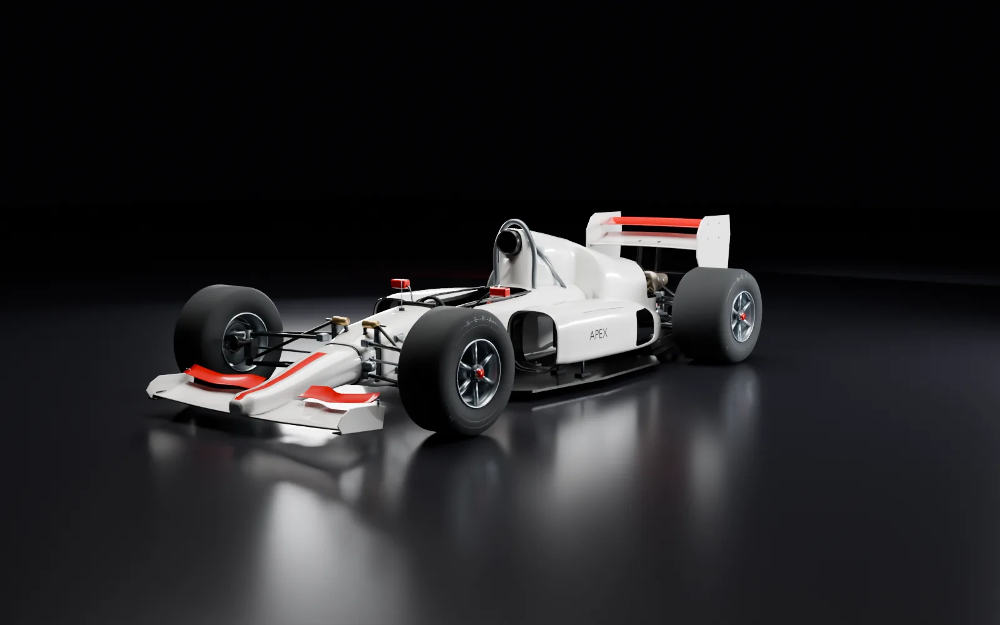
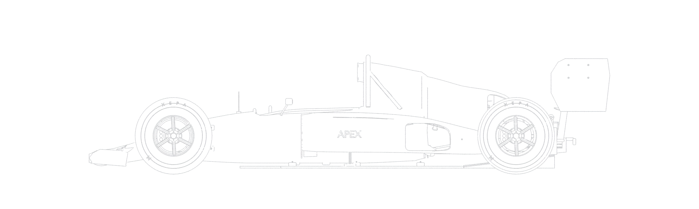
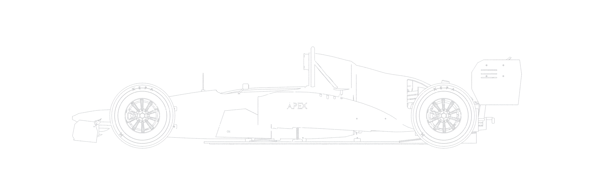
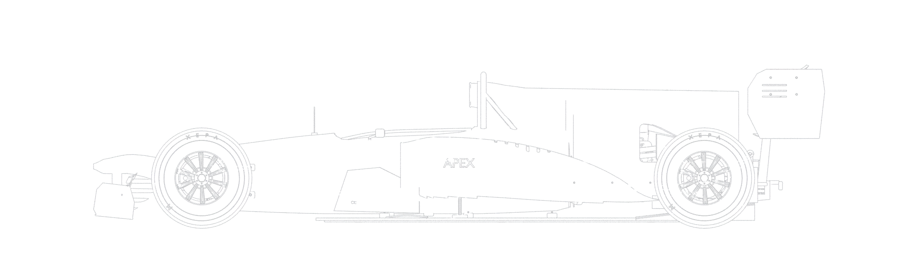
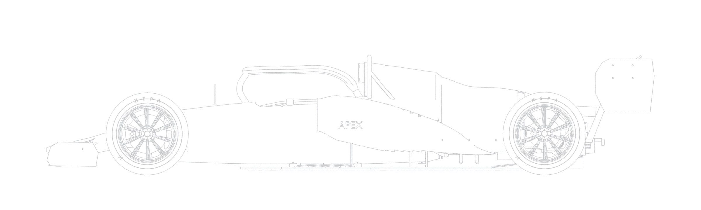
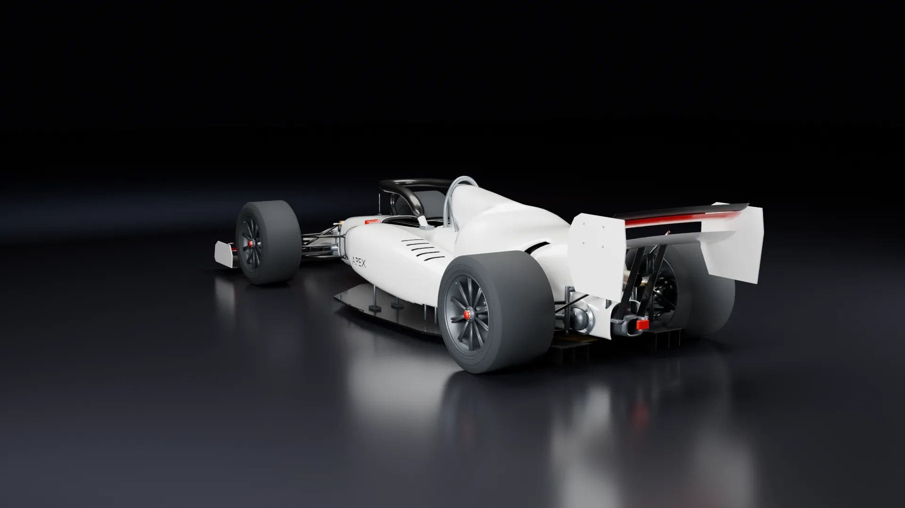

Konstruiere ein Formel-1-Auto. Dann fahr damit eine Saison.
Du bist Technischer Direktor eines neuen Teams. Du entwirfst Flügel, Unterboden und Aufhängung, prüfst sie in CFD und Windkanal, findest im Training das Setup und entscheidest im Rennen über Reifen, Boxenstopps und Fahrmodus. In vier echten Reglement-Epochen von 1990 bis 2026.
29 Baugruppen. Jede wiegt etwas, jede wirkt.
Das 2026er Auto besteht im Spiel aus 29 Baugruppen, vom Monocoque bis zum Energiespeicher. Jede hat eine Masse, einen Platz im Auto und eine Wirkung im Fahrzeugmodell. Scroll weiter, und das Auto geht auseinander.
Das Monocoque trägt alles, der Halo schützt den Fahrer. Die Verkleidung entscheidet, wie viel Luft die Kühler bekommen. Größere Einlässe kühlen besser und kosten Luftwiderstand. Bei Hitze und im Windschatten braucht die Kühlung Reserve.
1,6-Liter-V6 mit Turbolader und 350-kW-MGU-K. Pro Saison gibt es nur wenige Motoren, Turbos und Getriebe. Wer ein Element über das Kontingent hinaus einbaut, startet weiter hinten.
Frontflügel, Unterboden, Heckflügel, Seitenkästen und Aufhängung entwirfst du im Konstruktionsbüro selbst. Jedes Bauteil hat drei Parameter, jeder Parameter eine Nebenwirkung.
Zum KonstruktionsbüroDie Garage zeigt dein Auto mit allem, was eingebaut ist. Klick ein Bauteil am Modell an, und die Kamera fährt hin. Neu gelieferte Teile siehst du beim nächsten Besuch einsinken, wenn die Mechaniker sie montieren.

Fünf Lichter bis zur Zielflagge
Zwischen zwei Rennen arbeitet die Fabrik. Am Wochenende triffst du an der Strecke die Entscheidungen, Session für Session.
Training
Sieben Setup-Regler und fünf Trainingsblöcke. Nach jedem Run meldet der Fahrer, wo es hakt, und das grüne Fenster der Ingenieure wird enger. Longruns messen, wie schnell die Reifen abbauen.
80 % Setup-Vertrauen kosten rund 0,2 Sekunden pro Runde.
Qualifying
Q1, Q2 und Q3 im K.-o.-System. Du wählst Mischung, Anzahl der Versuche und Risiko. Die Ingenieure sagen dir vorher, wie knapp es an der Grenze wird.
„Am Limit“ ist im Mittel 0,28 % schneller. 13 % dieser Runden werden gestrichen.
Strategie
Jede Kombination aus Mischungen und Stopps wird durchgerechnet. Du siehst die Rundenzeit über die ganze Distanz und verschiebst die Stopps selbst.
Ein Boxenstopp kostet 2026 rund 21,6 Sekunden, unter Safety Car etwa die Hälfte.
Rennen
Zeitenturm, Funk, Safety Car und Regen. Du stellst Fahrmodus und Energie ein, rufst den Fahrer an die Box und entscheidest, wenn der Renningenieur fragt.
Eine Einheit der Startampel pro Sekunde, dann 0,2 bis 3 Sekunden Warten. Wie in der Formel 1.
Auswertung
Die Ingenieure vergleichen deine Rennpace mit dem Startplatz, zeigen den Reifenabbau je Stint und was das Setup gekostet hat. Danach kommt die technische Abnahme.
Mehr als 1,0 mm Plankenabrieb oder weniger als ein Liter Sprit: Disqualifikation.
Jeder Vorteil kostet woanders Zeit
Es gibt kein bestes Teil und kein bestes Setup. Es gibt nur das passende für diese Strecke, diese Temperatur und dieses Rennen. Diese Werte stammen aus dem Fahrzeugmodell des Spiels.
Drei Ebenen, ein Auto

Entwerfen, messen, bauen
Fünf Bauteile mit je drei Parametern. Rechnung, CFD und Windkanal liegen unterschiedlich weit daneben.
Zur Konstruktion
Vom Setup bis zur Abnahme
Training, Qualifying, Strategie, Rennen und Auswertung, mit den Formeln dahinter.
Zum Rennwochenende
1990, 2004, 2010, 2026
Saugmotor, V10 mit Nachtanken, Doppeldiffusor, Hybrid mit aktiver Aerodynamik.
Zu den Epochen36 Jahre Reglement in einer Zeichnung
1990 war ein Formel-1-Auto 4,47 m lang und wog ohne Fahrer 500 kg. 2026 sind es 5,20 m und 770 kg mit Fahrer. Die Seitenansichten stammen aus den Modellen des Spiels, alle im selben Maßstab.





APEX Engineer 2.10 für macOS
Ein Paket für Apple Silicon und Intel, ab macOS 13. Kein Konto, keine Verbindung, kein Abo. Der Spielstand bleibt auf deinem Mac.